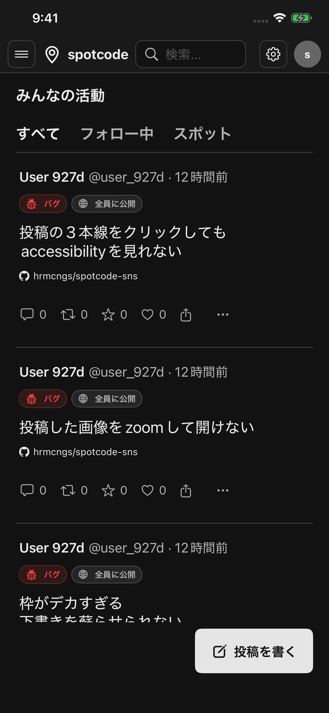
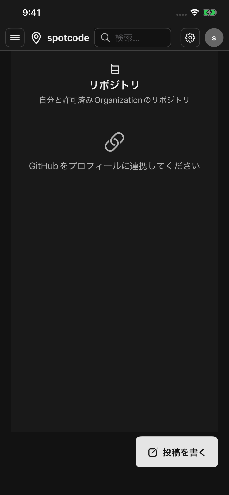
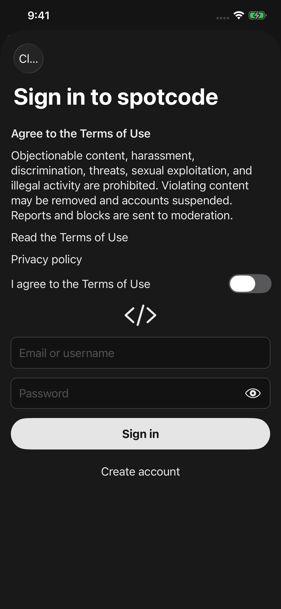
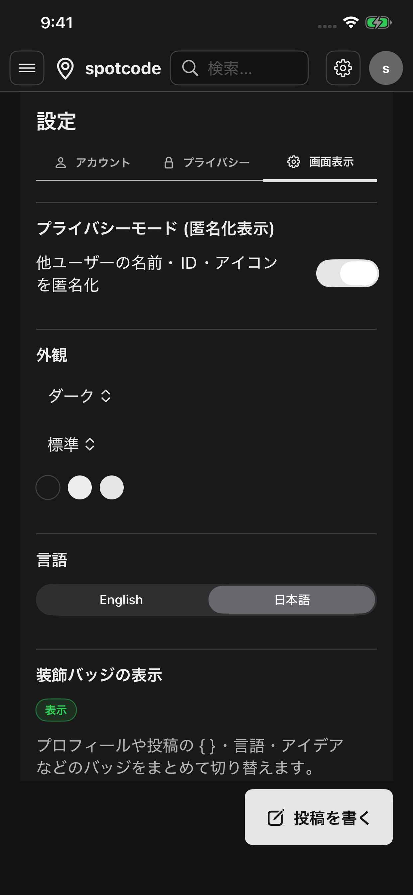

IDEA × LOCATION
その場所で生まれた発想を、
位置情報と一緒に投稿
- 文章・画像・コード・リンクをひとつの投稿にまとめられます。
- 「場所を追加」して、街や施設をアイデアの文脈として残せます。
- 公開範囲や下書きを選べるため、思いついた瞬間から育てられます。
机の前だけでは生まれない発想を、忘れる前に記録。現地の気づきを開発のスタート地点にします。
ホーム / 投稿作成
テック甲子園2026｜プロダクト部門応募企画書
場所からアイデアが生まれ、
コードとして育っていく。

テック甲子園2026｜プロダクト部門応募企画書
IDEA × LOCATION
テック甲子園2026｜プロダクト部門応募企画書
GITHUB × COMMUNITY

GitHubリポジトリテック甲子園2026｜プロダクト部門応募企画書
SAFE START

サインイン / 新規登録テック甲子園2026｜プロダクト部門応募企画書
YOUR WAY

設定 / 表示のカスタマイズ作品名：spotcode ｜ 1次審査ID：ENT-260-2A12H6N